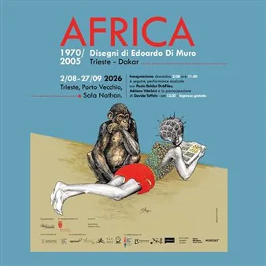

da dom 2 ago a dom 27 set
Africa 1970-2005 - Disegni di Edoardo Di Muro
Dal 2 agosto al 27 settembre, la Sala Nathan del Magazzino 26 a Trieste ospita la mostra "AFRICA 1970-2005 Disegni di Edoardo Di Muro". Africa 1970–2005 – Drawings by Edoardo Di Muro Domenica 2 agosto alle ore 10:30 a Porto Vecchio anteprima stampa: l'apertura ufficiale sarà…
 Indicazioni
Indicazioni
- Costi e prenotazioni
- Costo non indicato · Prenotazione non indicata
- Programma
- Programma da verificare. Apri la fonte ufficiale per orari e possibili aggiornamenti.
- In caso di maltempo
- Nessuna indicazione specifica pubblicata.
- Note
- Acquisito automaticamente dalla fonte.
L’EVENTO
Descrizione completa
Dal 2 agosto al 27 settembre, la Sala Nathan del Magazzino 26 a Trieste ospita la mostra "AFRICA 1970-2005 Disegni di Edoardo Di Muro". Viene esposta per la prima volta in Italia una collezione di disegni di Edoardo Di Muro, che nel continente africano ha vissuto per quasi quarant'anni, raccontandone la vita quotidiana, i paesaggi e l'essenza attraverso un tratto grafico potente e millimetrico.
Un'opera che racconta un viaggio lungo quanto una vita intera e che connette idealmente e culturalmente il porto di Trieste a quello di Dakar, aprendo la strada a futuri scambi e collaborazioni internazionali.
Domenica 2 agosto alle ore 10:30 a Porto Vecchio anteprima stampa: l'apertura ufficiale sarà accompagnata da una performance musicale di Paolo Baldini DubFiles e Adriano Viterbini, con la partecipazione di Davide Toffolo (powered by Rockers Dub Master sound system).
La mostra è curata da Paola Bristot e Mimina Di Muro ed è co-organizzata dall'Assessorato Politiche della Cultura e del Turismo del Comune di Trieste con il contributo di Regione Friuli Venezia Giulia.
Venerdì, sabato, domenica e festivi dalle 11.00 alle 20.00
IL PROGRAMMA
Programma e orari
Appuntamenti raccolti dalle fonti elencate. Dove manca un orario, non è ancora disponibile in questa scheda.
Programma pubblicato
- Dal 2026-08-02 al 2026-09-27
INFORMAZIONI UTILI
Prima di partire
- Controllare la fonte prima di partire.
ORGANIZZAZIONE